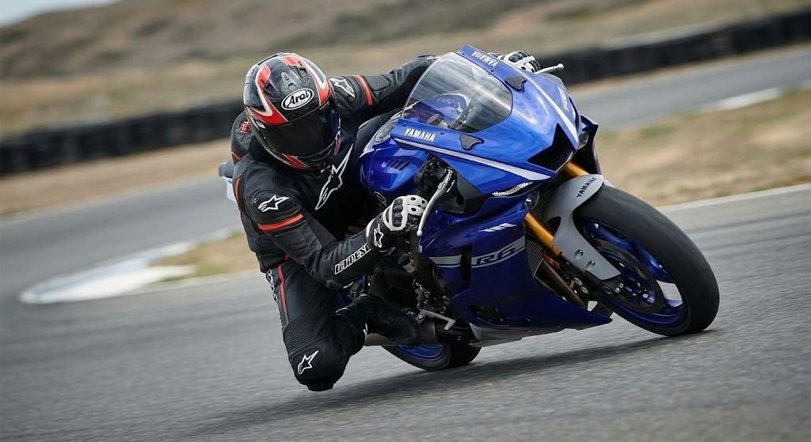
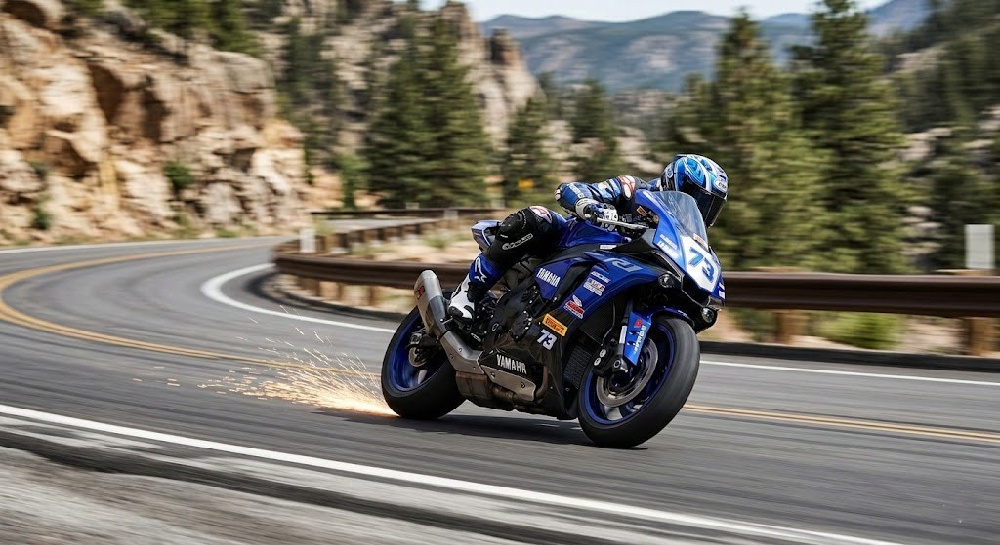

Precision. Control. Dominance. Learn the advanced riding techniques that separate the professionals from the rest. Understand the physics of your ride.
Motorcycling is an art bound by the strict laws of physics. Understanding how your bike reacts to throttle input, braking force, and body positioning is the key to unlocking its full potential and ensuring your safety on the road.
Push right to go right. Push left to go left. Mastering counter-steering is essential for initiating rapid, controlled leans at higher speeds.
Your bike goes where your eyes go. Train yourself to look entirely through the corner, focusing on the exit rather than the obstacles immediately in front of you.
An advanced technique where braking is continued beyond the turn-in point and gradually trailed off as lean angle increases, keeping the front tire planted.
Smoothness is speed. Rolling on the throttle smoothly mid-corner settles the suspension and maximizes rear tire grip as you exit the apex.
Shifting your weight to the inside of a turn allows the motorcycle to remain more upright, preserving ground clearance and tire contact patch.
Blipping the throttle while downshifting matches engine speed to wheel speed, preventing rear-wheel lockup and ensuring buttery-smooth gear transitions.

Cornering is the most exhilarating, yet dangerous, aspect of riding. To execute a turn safely at speed, you must break the corner down into specific, calculated segments rather than just reacting on the fly.
Follow these 4 sequential steps to safely carve through any curve.
Complete all your heavy braking and downshifting while the bike is still straight. Move your body position to the inside of the upcoming turn before you begin to lean.
Point your chin into the corner and look as far ahead as possible. Apply deliberate pressure to the inside handlebar (counter-steer) to drop the bike into its lean angle.
Maintain steady, neutral throttle as you pass the innermost point of the corner (the apex). Keeping the throttle neutral keeps the suspension perfectly balanced.
As you pass the apex and begin to see the road straighten out, smoothly roll on the throttle. The acceleration will naturally stand the bike back up as you exit the corner.